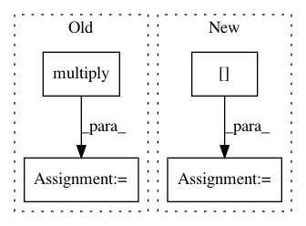

b540e054944fce7065635ac7891f65571ffc4d55,keras_rcnn/backend/tensorflow_backend.py,,crop_and_resize,#Any#Any#Any#,94
Before Change
box_inds = []
for j in range(batch):
box_ind = tensorflow.ones(num_boxes, tensorflow.int32)
box_ind = tensorflow.multiply(j, box_ind)
box_inds.append(box_ind)
box_inds = tensorflow.concat(box_inds, axis=0)
boxes = tensorflow.reshape(boxes, [-1, 4])
After Change
4D Tensor (number of regions, slice_height, slice_width, channels)
box_ind = tensorflow.zeros_like(boxes, tensorflow.int32)
box_ind = box_ind[..., 0]
box_ind = tensorflow.reshape(box_ind, [-1])
boxes = tensorflow.reshape(boxes, [-1, 4])
return tensorflow.image.crop_and_resize(image, boxes, box_ind, size)
In pattern: SUPERPATTERN
Frequency: 4
Non-data size: 4
Instances
Project Name: broadinstitute/keras-rcnn
Commit Name: b540e054944fce7065635ac7891f65571ffc4d55
Time: 2017-06-10
Author: jujihong.cn@gmail.com
File Name: keras_rcnn/backend/tensorflow_backend.py
Class Name:
Method Name: crop_and_resize
Project Name: Esri/raster-functions
Commit Name: d40ecc90c80ded43a98d23e0e46b5f5e849f02c5
Time: 2014-08-26
Author: akferoz@esri.com
File Name: ReferenceTemplate.py
Class Name: ReferenceFunction
Method Name: updatePixels
Project Name: deepchem/deepchem
Commit Name: c08d9e1dfa7062682697311a2bad6795f87b6c40
Time: 2017-04-14
Author: zqwu@stanford.edu
File Name: deepchem/nn/layers.py
Class Name: DTNNStep
Method Name: call
Project Name: scikit-learn-contrib/DESlib
Commit Name: 0e17f47e9a4920e276bb61b60d6de16264bc6bcf
Time: 2017-12-29
Author: rafaelmenelau@gmail.com
File Name: pythonds/util/prob_functions.py
Class Name:
Method Name: entropy_func